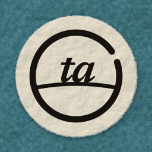

Torn Atlas
Why the map looks the way it does
Short explainers on borders, straits, rivers and the strange geography behind the news, made as paper-style animated maps.
Watch on YouTube: @tornatlasgeo

Short explainers on borders, straits, rivers and the strange geography behind the news, made as paper-style animated maps.
Watch on YouTube: @tornatlasgeo